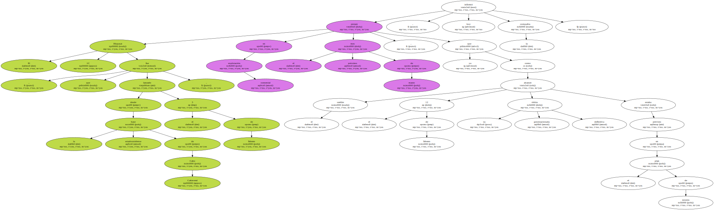
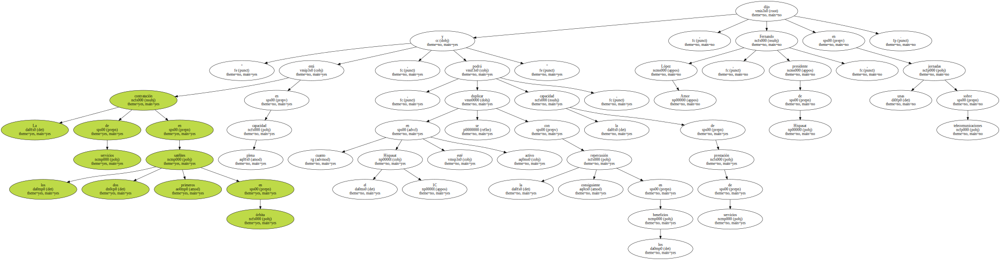
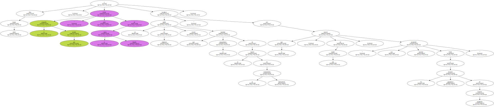
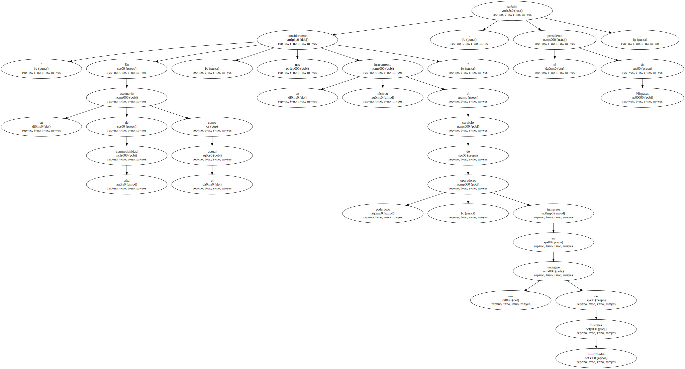
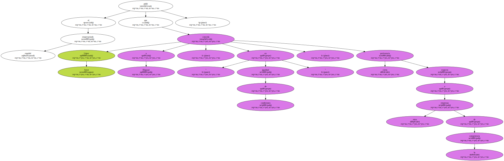
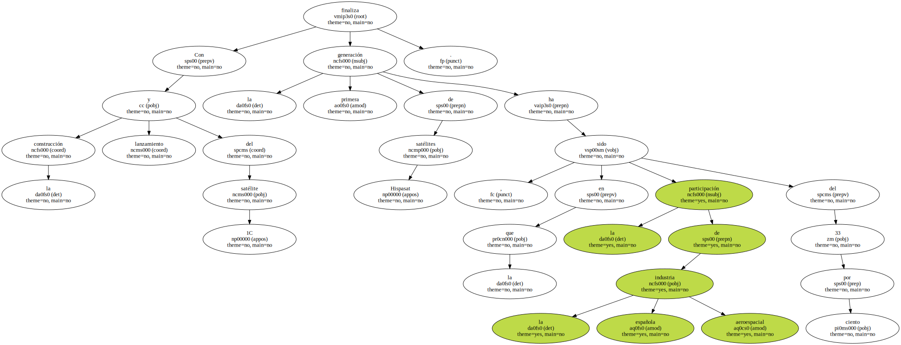

El Hispasat 1C , que fue lanzado desde la base estadounidense de Cabo Cañaveral el 3 de febrero , entrará en explotación comercial el próximo mes de marzo , ya que el satélite alcanzó el 12 de febrero su órbita geoestacionaria definitiva como estaba previsto en el plan de misión , informó hoy la compañía.
" La contratación de servicios en los dos primeros satélites en órbita está en plena capacidad , y en cuanto el Hispasat 1C esté activo , se podrá duplicar la capacidad de prestación de servicios , con la consiguiente repercusión en los beneficios " , dijo Fernando López Amor , presidente de Hispasat , en unas jornadas sobre telecomunicaciones.
El Hispasat 1C aumenta la capacidad del sistema español de telecomunicaciones por satélite , ya que cuenta con 24 transpondedores de alta potencia ( los mismos que el 1A y el 1B juntos ) , una masa de lanzamiento un 50 por ciento mayor que los dos satélites anteriores y una vida útil de 15 años.

Para López Amor , la compañía que preside " forma parte de la marca España y constituye un medio de relaciones propio que garantiza el autogobierno en el mundo de la comunicación internacional " por lo que , en este sentido , supone " una modesta protección frente a los gigantescos procesos de fusiones multimedia ".
" En un escenario de alta competitividad como el actual , nos consideramos un instrumento técnico al servicio de poderosos operadores , inmersos en una vorágine de fusiones multimedia " , señaló el presidente de Hispasat.
López Amor pidió al empresariado español que conceda a Hispasat , " en igualdad de condiciones " , cierta preferencia respecto a otras empresas de la competencia.
Con la construcción y lanzamiento del satélite 1C finaliza la primera generación de satélites Hispasat , en la que la participación de la industria española aeroespacial ha sido del 33 por ciento.
